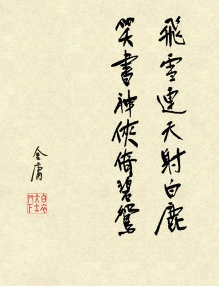

【修订版金庸小说全集】
修订版，也称新版，三联版，流传最广，首次阅读推荐阅读此版本！
本书作者：金庸
全集版本：修订版（第二版）
版权声明：金庸小说全集网所有小说版权永归原作者金庸所有，本站只做演示交流，请支持正版小说！本站上所演示小说均由金庸的铁杆粉丝提供上传，如无意中有侵犯您的版权，请联系站长告知。
关于金庸小说的三大版本：
金庸小说有三个版本：旧版（连载版）、新版（三联版）和新修版。
1955年至1972年的小说稿称为旧版，主要连载于报刊，故“旧版”，也称“连载版”。连载后的各小说又出现了许多没有版权的单行本，现大多已散佚（直至2000年后，金庸所有作品的旧版都被书迷完整整理出电子版）。
1970年起，金庸着手修订所有作品，至1980年全部修订完毕；是为“修订版”，“新版”，冠以《金庸作品集》之名，授权三联书店出版发行，“修订版”故俗称“新版”、“三联版”。
1999年，金庸又开始修订小说，正名为“新修版”，至今已全部修订完毕，分别授权大陆广州出版社、台湾远流出版社、香港明河社出版发行。
本栏目金庸小说全集列表为《修订版金庸小说全集》。其他版入口：《旧版金庸小说全集》、《新修版金庸小说全集》。
- 修订版金庸小说全集列表
- 书剑恩仇录 / 三联出版社（1980年）
- 碧血剑 / 三联出版社（1980年）
- 射雕英雄传 / 三联出版社（1980年）
- 雪山飞狐 / 三联出版社（1980年）
- 神雕侠侣 / 三联出版社（1980年）
- 飞狐外传 / 三联出版社（1980年）
- 鸳鸯刀 / 三联出版社（1980年）
- 倚天屠龙记 / 三联出版社（1980年）
- 白马啸西风 / 三联出版社（1980年）
- 连城诀 / 三联出版社（1980年）
- 天龙八部 / 三联出版社（1980年）
- 侠客行 / 三联出版社（1980年）
- 笑傲江湖 / 三联出版社（1980年）
- 鹿鼎记 / 三联出版社（1980年）
- 越女剑 / 三联出版社（1980年）